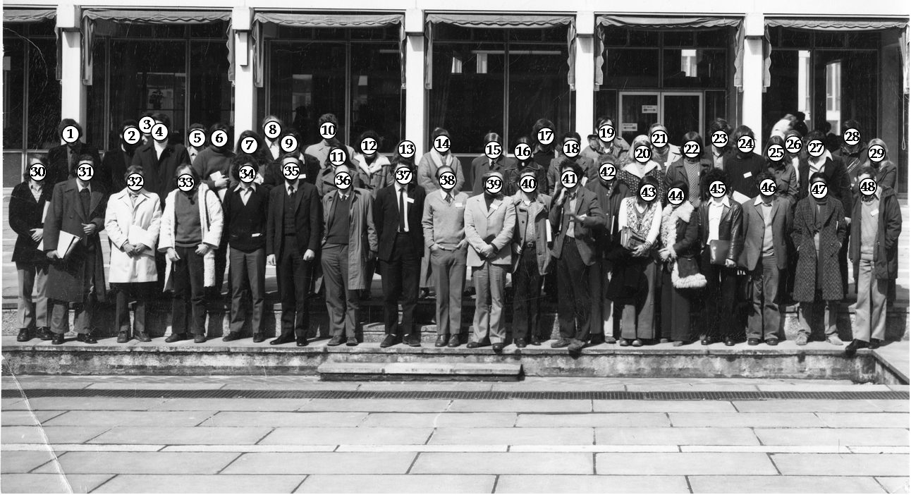

Thanks to Stephen Alexander (number 23) for contributing the picture.
| Hide legend - View names in a new window | |
|
TOP ROW: 1. Julian Gross 2. Robert Steinberg 3. ? 4. ? 5. José Mato 6. Malcolm Wright 7. ? 8. Günter Gerisch 9. ? 10. Theo Konijn 11. Dorota Mosses 12. ? 13. Isabel Mullens 14. ? 15. Donald Watt 16. Irene Zada-Hames 17. David Hames 18. ? 19. ? 20. ? 21. ? 22. Alistair Lax 23. Stephen Alexander 24. Robert Kay 25. Marylyn Monk 26. ? 27. Anthony Durston 28. ? 29. Anita Green | |
|
BOTTOM ROW: 30. Chris Town 31. John Smart 32. Jim Greg 33. Philippe Brachet 34. Peter Shafer 35. Peter Newell 36. John Bonner 37. John Ashworth 38. Howard Richenberg 39. Hans Hohl 40. Eugene Katz 41. Mike Brenve 42. Alvin Malkinson 43. ? 44. Claudette Klein 45. David Forman 46. Goldbetter 47. Vidyanand Nanjudiah 48. Dieter Melchow | |